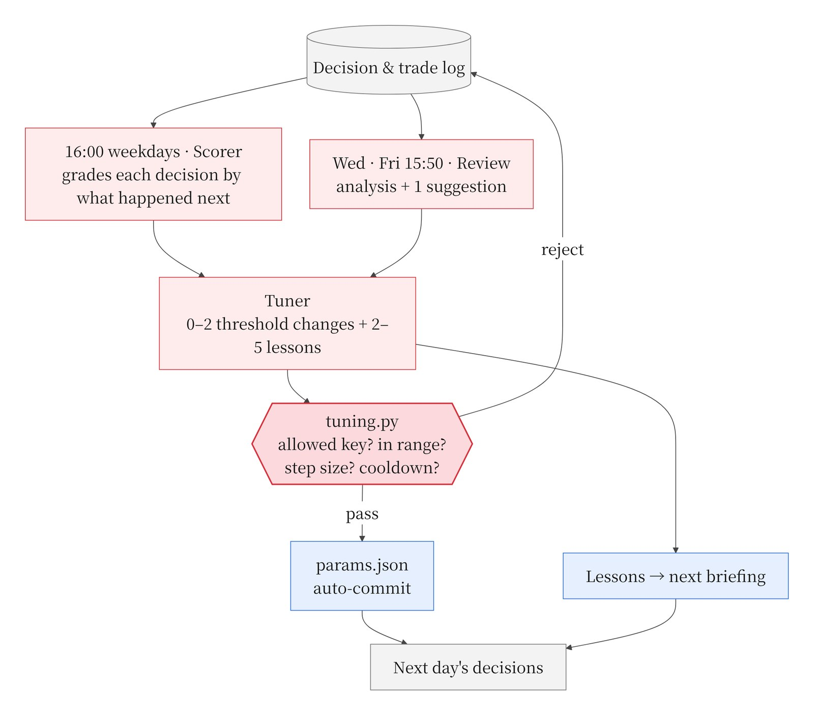
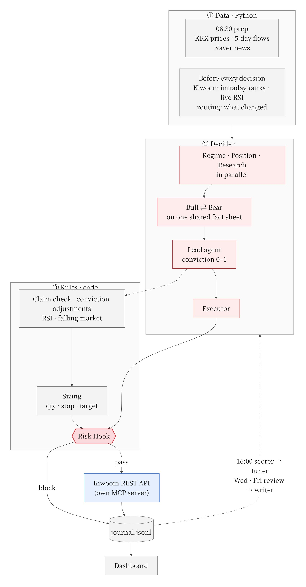
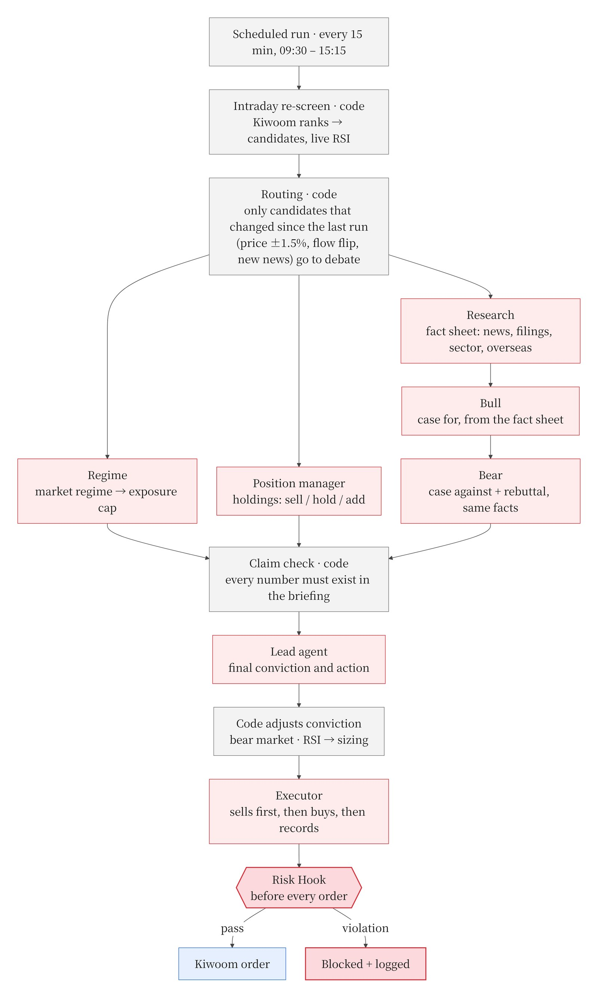

Overview
An autonomous trading agent for Korean equities where every decision and order comes from the AI. Agents argue and score conviction; code computes the numbers, sizes orders and blocks any order that breaks a risk limit.
- Shown at
- 2026 Navist UOStock AI automated trading competition, live, on a real account
- Run
- 2026-11-02 to 2026-11-27
- Data
- Kiwoom REST API, KRX and Naver news
- Method
- lead, regime, position, research, bull, bear and executor agents, risk Hook
- Coverage
- 24 decision runs a day, 09:30 to 15:15
Problem define
Given the whole trading loop, an LLM misreads a price and trades on it. "Cut losses at -7%" in a prompt "is a wish, not a guarantee."
- 17 of 44 sells after 11-05 were under 500,000 won, piling up fees
Solution
A loop where agents debate candidates every 15 minutes and code sizes each order. A Hook checks every order; an after-close Scorer and Tuner adjust thresholds within fixed ranges.
| Value with unit | What it measures (10 words or fewer) |
|---|---|
| 47k tokens | First split-agent run, against 84k in the old flow |
| 471 s | Same run's wall time, against 297 s before |

Process
- Dashboard. The repo started with a GitHub Pages dashboard and balance snapshots pushed to Supabase every minute.
- Guardrails. A risk Hook runs before every place_order and the agent cannot skip or edit it.
- Split. On 11-12 one agent's work moved to role agents; the new claim check first flagged all 15 stocks wrongly and was fixed.
- Tuning. After the close a Scorer grades each decision and a Tuner changes 0 to 2 thresholds inside fixed ranges.


Lesson
Hard limits sit in code; buy and sell judgement kept needing new rules. The changelog adds rules after losing trades: KODEX 200 buys stopped on 11-11, KOSDAQ buys limited on 11-17. The final result against the benchmark is not published yet; the live run ends 2026-11-29.